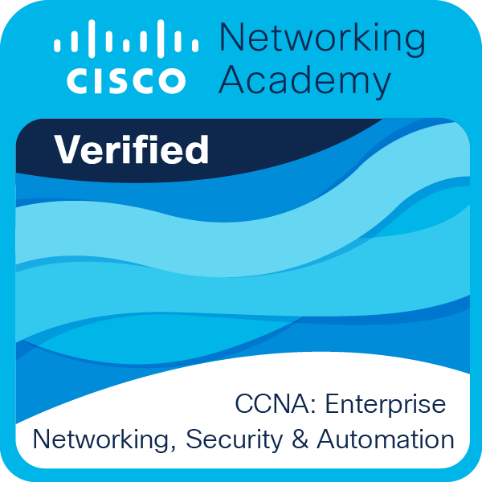
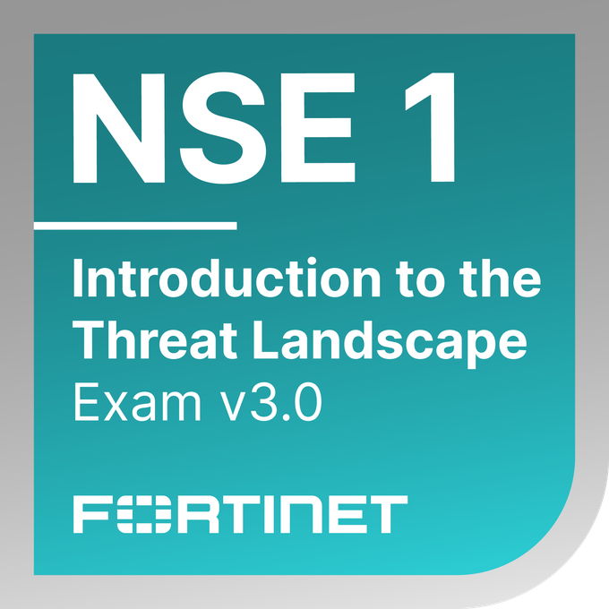

15+
Projets, labs & déploiements techniques
Infrastructure & cybersécurité
Administrateur d’infrastructures sécurisées · Cybersécurité · Pentest junior
Je conçois et sécurise des environnements systèmes, réseaux et cloud avec une approche orientée audit, conformité et amélioration continue.
15+
Projets, labs & déploiements techniques
10+
Certifications & formations validées
24/7
Veille cybersécurité & CTI
Un aperçu des badges techniques validés et des parcours de montée en compétences en cybersécurité et infrastructure.





Une sélection de projets et travaux en cours autour de l’infrastructure, de la cybersécurité, de la gouvernance et de la documentation technique.
Développement d’un intranet moderne avec annuaire, actualités, accès métiers et intégration progressive à l’environnement Microsoft/Active Directory.
Mise en place d’une vision structurée des actifs, applications, VLAN, serveurs et services critiques pour renforcer la gouvernance cyber.
Travaux autour de la PSSI, du PCA/PRA, de NIS 2 et des bonnes pratiques ANSSI/NIST.
Environnements de test autour de Docker, GLPI, NetBox, supervision, durcissement Linux/Windows et analyse réseau.
Formation spécialisée en administration d’infrastructures sécurisées, systèmes, réseaux et cybersécurité.
Voir le parcours →Certifications techniques et formations continues validant la progression en infrastructure, réseau, sécurité et cloud.
Voir les certifications →Suivi des vulnérabilités, alertes CERT-FR, tendances cyber, ransomware, CTI et durcissement défensif.
Consulter la veille →Déploiements, labs et documentations autour de Docker, GLPI, NetBox, supervision, systèmes Linux/Windows et sécurité réseau.
Explorer les projets →Guides pratiques, retours d’expérience et analyses techniques sur le durcissement, l’administration et la défense des SI.
Explorer le blog →Explorez des démonstrations interactives, mini-jeux et parcours cyber immersifs.
Explorez un univers cyber immersif avec visualisation d’attaques, veille offensive et démonstrations interactives.